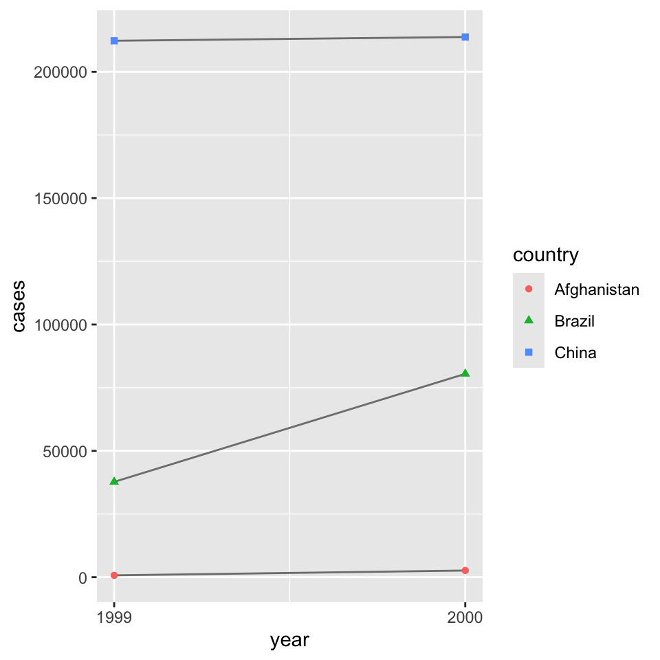
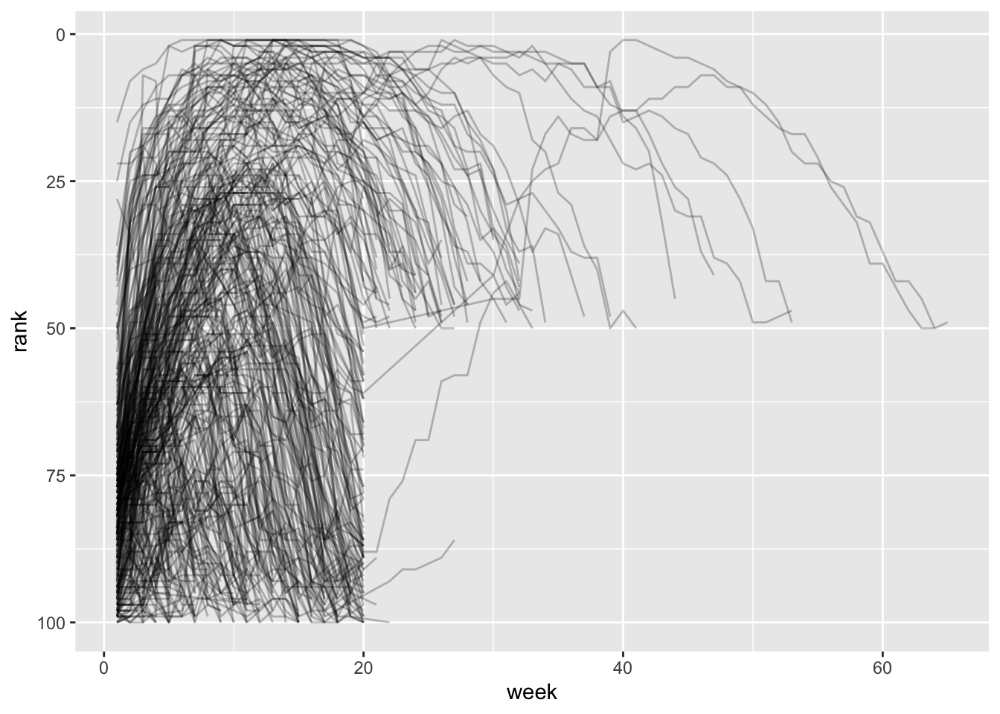
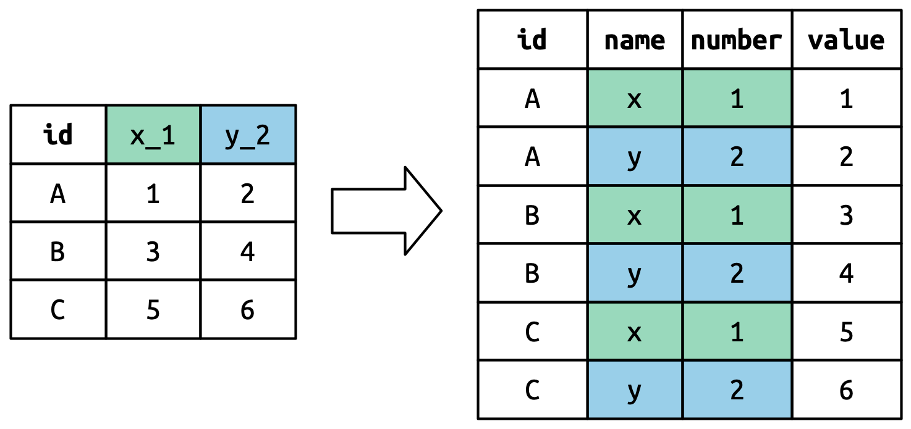

library(tidyverse)1 데이터 정돈하기 (Data tidying)
1.1 소개 (Introduction)
“행복한 가정은 모두 엇비슷하지만 불행한 가정은 제각기 나름대로의 이유로 불행하다.”
— 레프 톨스토이 (Leo Tolstoy)
“정돈된 데이터셋은 모두 엇비슷하지만 지저분한 데이터셋은 제각기 나름대로의 이유로 지저분하다.”
— 해들리 위컴 (Hadley Wickham)
이 장에서는 타이디 데이터(tidy data)라는 시스템을 사용하여 R에서 데이터를 구성하는 일관된 방법에 대해 배울 것입니다. 데이터를 이 형식으로 만들려면 초반에 약간의 작업이 필요하지만 그 작업은 장기적으로 보상을 가져다줍니다. 타이디 데이터와 tidyverse의 패키지들이 제공하는 정돈된 도구(tidy tools)가 준비되면 데이터를 한 형태에서 다른 형태로 바꾸는 데(munging) 훨씬 적은 시간을 소비하게 되어, 여러분이 관심을 가지고 있는 데이터 질문에 더 많은 시간을 할애할 수 있게 됩니다.
이 장에서는 먼저 타이디 데이터의 정의를 배우고 단순한 장난감 데이터셋(toy dataset)에 이를 적용하는 방법을 살펴볼 것입니다. 그런 다음 데이터를 정돈하는 데 사용할 기본 도구인 피벗팅(pivoting)에 대해 자세히 알아보겠습니다. 피벗팅을 사용하면 어떤 값도 변경하지 않고 데이터의 형태를 변경할 수 있습니다.
1.1.1 전제 조건 (Prerequisites)
이 장에서는 지저분한 데이터셋을 정돈하는 데 도움이 되는 여러 도구를 제공하는 패키지인 tidyr에 중점을 둘 것입니다. tidyr은 핵심 tidyverse의 일원입니다.
이 장부터는 library(tidyverse)의 로딩 메시지를 억제할 것입니다.
1.2 타이디 데이터 (Tidy data)
동일한 기본 데이터를 여러 가지 방법으로 나타낼 수 있습니다. 아래 예시는 동일한 데이터가 세 가지 다른 방식으로 구성된 것을 보여줍니다. 각 데이터셋은 국가(country), 연도(year), 인구(population), 문서화된 결핵(TB) 발병 건수(cases) 등 4개 변수의 동일한 값을 보여주지만 각 데이터셋은 값을 다른 방식으로 구성합니다.
table1# A tibble: 6 × 4
country year cases population
<chr> <dbl> <dbl> <dbl>
1 Afghanistan 1999 745 19987071
2 Afghanistan 2000 2666 20595360
3 Brazil 1999 37737 172006362
4 Brazil 2000 80488 174504898
5 China 1999 212258 1272915272
6 China 2000 213766 1280428583table2# A tibble: 12 × 4
country year type count
<chr> <dbl> <chr> <dbl>
1 Afghanistan 1999 cases 745
2 Afghanistan 1999 population 19987071
3 Afghanistan 2000 cases 2666
4 Afghanistan 2000 population 20595360
5 Brazil 1999 cases 37737
6 Brazil 1999 population 172006362
7 Brazil 2000 cases 80488
8 Brazil 2000 population 174504898
9 China 1999 cases 212258
10 China 1999 population 1272915272
11 China 2000 cases 213766
12 China 2000 population 1280428583table3# A tibble: 6 × 3
country year rate
<chr> <dbl> <chr>
1 Afghanistan 1999 745/19987071
2 Afghanistan 2000 2666/20595360
3 Brazil 1999 37737/172006362
4 Brazil 2000 80488/174504898
5 China 1999 212258/1272915272
6 China 2000 213766/1280428583이들은 모두 동일한 기본 데이터의 표현이지만 사용하기가 똑같이 쉽지는 않습니다. 그중 하나인 table1은 타이디(tidy)하기 때문에 tidyverse 내부에서 작업하기가 훨씬 더 쉬울 것입니다.
데이터셋을 타이디하게 만드는 서로 연관된 세 가지 규칙이 있습니다.
- 각 변수는 열(column)이어야 합니다. 각 열은 하나의 변수입니다.
- 각 관측치는 행(row)이어야 합니다. 각 행은 하나의 관측치입니다.
- 각 값은 셀(cell)이어야 합니다. 각 셀은 단일 값입니다.
?@fig-tidy-structure는 규칙을 시각적으로 보여줍니다.

데이터가 타이디한지 확인해야 하는 이유는 무엇일까요? 주로 두 가지 장점이 있습니다.
데이터 저장 방식에 대해 일관된 방법을 하나 선택하는 것의 일반적인 이점이 있습니다. 일관된 데이터 구조가 있다면 기본적으로 획일성(uniformity)을 가지기 때문에 데이터 구조에 맞는 도구를 배우기 더 쉽습니다.
변수를 열에 배치하면 R의 벡터화(vectorized) 특성이 빛을 발할 수 있으므로 구체적인 장점이 있습니다. ?@sec-mutate 및 ?@sec-summarize에서 배운 것처럼 대부분의 내장 R 함수는 값의 벡터(vectors of values)와 함께 작동합니다. 그 덕분에 타이디 데이터를 변환하는 것이 특히 자연스럽게 느껴집니다.
dplyr, ggplot2 및 tidyverse의 다른 모든 패키지들은 타이디 데이터로 작업하도록 설계되었습니다. 다음은 table1로 어떻게 작업할 수 있는지 보여주는 몇 가지 간단한 예시입니다.
# 10,000명당 발병률(rate) 계산
table1 |>
mutate(rate = cases / population * 10000)# A tibble: 6 × 5
country year cases population rate
<chr> <dbl> <dbl> <dbl> <dbl>
1 Afghanistan 1999 745 19987071 0.373
2 Afghanistan 2000 2666 20595360 1.29
3 Brazil 1999 37737 172006362 2.19
4 Brazil 2000 80488 174504898 4.61
5 China 1999 212258 1272915272 1.67
6 China 2000 213766 1280428583 1.67 # 연도별 총 발병 건수 계산
table1 |>
group_by(year) |>
summarize(total_cases = sum(cases))# A tibble: 2 × 2
year total_cases
<dbl> <dbl>
1 1999 250740
2 2000 296920# 시간 경과에 따른 변화 시각화
ggplot(table1, aes(x = year, y = cases)) +
geom_line(aes(group = country), color = "grey50") +
geom_point(aes(color = country, shape = country)) +
scale_x_continuous(breaks = c(1999, 2000)) # x축 눈금을 1999년과 2000년으로 나눔
1.2.1 연습 문제 (Exercises)
각 샘플 테이블에 대해 각 관측치와 각 열이 무엇을 나타내는지 설명하세요.
table2와table3에 대한 비율(rate)을 계산하는 데 사용할 과정을 스케치해 보세요. 네 가지 연산을 수행해야 합니다.- 국가별, 연도별 결핵 발생 건수를 추출합니다.
- 국가별, 연도별 해당하는 인구를 추출합니다.
- 발생 건수를 인구로 나누고 10000을 곱합니다.
- 적절한 위치에 다시 저장합니다.
아직 이 연산을 실제로 수행하는 데 필요한 함수를 모두 배우지는 않았지만 필요한 변환 과정을 논리적으로 생각할 수는 있어야 합니다.
1.3 데이터 길게 만들기 (Lengthening data)
타이디 데이터의 원칙이 너무 당연해 보여서 타이디하지 않은 데이터셋을 만날 일이 있을까 궁금할 수도 있습니다. 하지만 불행히도 대부분의 실제 데이터는 정돈되어 있지 않습니다. 여기에는 두 가지 주요 이유가 있습니다.
데이터는 분석 이외의 다른 목표를 용이하게 하기 위해 구성되는 경우가 많습니다. 예를 들어 분석이 아닌 데이터 입력을 쉽게 할 수 있도록 데이터가 구조화되는 것이 흔합니다.
대부분의 사람들은 타이디 데이터의 원리에 익숙하지 않으며, 데이터 작업을 많이 해보지 않고서는 여러분 스스로 이를 이끌어내기가 어렵습니다.
이것은 대부분의 실제 분석에서 최소한 약간의 정돈 과정이 필요하다는 것을 의미합니다. 기저에 있는 변수와 관측치가 무엇인지 파악하는 것으로 시작할 것입니다. 이것이 쉬울 때도 있지만, 원본 데이터를 생성한 사람들과 상의해야 하는 경우도 있습니다. 다음으로 데이터를 피벗(pivot)하여 변수는 열에 관측치는 행에 있는 타이디한 형태로 변환할 것입니다.
tidyr은 데이터를 피벗하기 위한 두 가지 함수를 제공합니다. pivot_longer()와 pivot_wider()입니다. 가장 흔한 사례이므로 먼저 pivot_longer()부터 시작하겠습니다. 몇 가지 예제를 살펴봅시다.
1.3.1 열 이름에 있는 데이터 (Data in column names)
billboard 데이터셋은 2000년 노래들의 빌보드 순위를 기록합니다.
billboard# A tibble: 317 × 79
artist track date.entered wk1 wk2 wk3 wk4 wk5 wk6 wk7 wk8
<chr> <chr> <date> <dbl> <dbl> <dbl> <dbl> <dbl> <dbl> <dbl> <dbl>
1 2 Pac Baby… 2000-02-26 87 82 72 77 87 94 99 NA
2 2Ge+her The … 2000-09-02 91 87 92 NA NA NA NA NA
3 3 Doors D… Kryp… 2000-04-08 81 70 68 67 66 57 54 53
4 3 Doors D… Loser 2000-10-21 76 76 72 69 67 65 55 59
5 504 Boyz Wobb… 2000-04-15 57 34 25 17 17 31 36 49
6 98^0 Give… 2000-08-19 51 39 34 26 26 19 2 2
7 A*Teens Danc… 2000-07-08 97 97 96 95 100 NA NA NA
8 Aaliyah I Do… 2000-01-29 84 62 51 41 38 35 35 38
9 Aaliyah Try … 2000-03-18 59 53 38 28 21 18 16 14
10 Adams, Yo… Open… 2000-08-26 76 76 74 69 68 67 61 58
# ℹ 307 more rows
# ℹ 68 more variables: wk9 <dbl>, wk10 <dbl>, wk11 <dbl>, wk12 <dbl>,
# wk13 <dbl>, wk14 <dbl>, wk15 <dbl>, wk16 <dbl>, wk17 <dbl>, wk18 <dbl>,
# wk19 <dbl>, wk20 <dbl>, wk21 <dbl>, wk22 <dbl>, wk23 <dbl>, wk24 <dbl>,
# wk25 <dbl>, wk26 <dbl>, wk27 <dbl>, wk28 <dbl>, wk29 <dbl>, wk30 <dbl>,
# wk31 <dbl>, wk32 <dbl>, wk33 <dbl>, wk34 <dbl>, wk35 <dbl>, wk36 <dbl>,
# wk37 <dbl>, wk38 <dbl>, wk39 <dbl>, wk40 <dbl>, wk41 <dbl>, wk42 <dbl>, …이 데이터셋에서 각 관측치는 노래입니다. 처음 세 열(artist, track, date.entered)은 노래를 설명하는 변수입니다. 그리고 각 주차별 노래의 순위를 설명하는 76개의 열(wk1-wk76)이 있습니다1. 여기서는 열 이름이 하나의 변수(week)이고 셀 값이 다른 변수(rank)입니다.
이 데이터를 정돈하기 위해 pivot_longer()를 사용할 것입니다.
billboard |>
pivot_longer(
cols = starts_with("wk"),
names_to = "week",
values_to = "rank"
)# A tibble: 24,092 × 5
artist track date.entered week rank
<chr> <chr> <date> <chr> <dbl>
1 2 Pac Baby Don't Cry (Keep... 2000-02-26 wk1 87
2 2 Pac Baby Don't Cry (Keep... 2000-02-26 wk2 82
3 2 Pac Baby Don't Cry (Keep... 2000-02-26 wk3 72
4 2 Pac Baby Don't Cry (Keep... 2000-02-26 wk4 77
5 2 Pac Baby Don't Cry (Keep... 2000-02-26 wk5 87
6 2 Pac Baby Don't Cry (Keep... 2000-02-26 wk6 94
7 2 Pac Baby Don't Cry (Keep... 2000-02-26 wk7 99
8 2 Pac Baby Don't Cry (Keep... 2000-02-26 wk8 NA
9 2 Pac Baby Don't Cry (Keep... 2000-02-26 wk9 NA
10 2 Pac Baby Don't Cry (Keep... 2000-02-26 wk10 NA
# ℹ 24,082 more rows데이터 뒤에는 세 가지 핵심 인수가 있습니다.
cols는 피벗해야 하는 열, 즉 변수가 아닌 열을 지정합니다. 이 인수는select()와 동일한 구문을 사용하므로 여기서는!c(artist, track, date.entered)또는starts_with("wk")를 사용할 수 있습니다.names_to는 열 이름에 저장된 변수의 이름을 지정하며 이 변수의 이름을week로 지정했습니다.values_to는 셀 값에 저장된 변수의 이름을 지정하며 우리는 이 변수의 이름을rank로 지정했습니다.
코드에서 "week"와 "rank"는 인용 부호 안에 있는데 그 이유는 이들이 우리가 생성하는 새로운 변수이고 pivot_longer() 호출을 실행할 때 데이터에 아직 존재하지 않기 때문입니다.
이제 결과로 나온, 더 길어진(longer) 데이터 프레임에 주의를 돌려보겠습니다. 노래가 76주 미만 동안 상위 100위 안에 있으면 어떻게 될까요? 2 Pac의 “Baby Don’t Cry”를 예로 들어보겠습니다. 위 출력은 이 노래가 7주 동안만 상위 100위 안에 있었고 나머지 모든 주는 결측값으로 채워져 있음을 시사합니다. 이러한 NA는 알 수 없는 관측치를 나타내는 것이 아닙니다. 이들은 데이터셋의 구조에 의해 강제로 생성된 것이므로2 values_drop_na = TRUE를 설정하여 pivot_longer()에게 이들을 제거하도록 요청할 수 있습니다.
billboard |>
pivot_longer(
cols = starts_with("wk"),
names_to = "week",
values_to = "rank",
values_drop_na = TRUE
)# A tibble: 5,307 × 5
artist track date.entered week rank
<chr> <chr> <date> <chr> <dbl>
1 2 Pac Baby Don't Cry (Keep... 2000-02-26 wk1 87
2 2 Pac Baby Don't Cry (Keep... 2000-02-26 wk2 82
3 2 Pac Baby Don't Cry (Keep... 2000-02-26 wk3 72
4 2 Pac Baby Don't Cry (Keep... 2000-02-26 wk4 77
5 2 Pac Baby Don't Cry (Keep... 2000-02-26 wk5 87
6 2 Pac Baby Don't Cry (Keep... 2000-02-26 wk6 94
7 2 Pac Baby Don't Cry (Keep... 2000-02-26 wk7 99
8 2Ge+her The Hardest Part Of ... 2000-09-02 wk1 91
9 2Ge+her The Hardest Part Of ... 2000-09-02 wk2 87
10 2Ge+her The Hardest Part Of ... 2000-09-02 wk3 92
# ℹ 5,297 more rows이제 행 수가 훨씬 적어졌으며 이는 NA가 포함된 많은 행이 삭제되었음을 나타냅니다.
어떤 노래가 76주를 초과하여 상위 100위 안에 든다면 어떻게 되는지 궁금할 수도 있습니다. 이 데이터에서는 알 수 없지만 wk77, wk78 등의 추가 열이 데이터셋에 추가되었을 것이라 추측할 수 있습니다.
이제 이 데이터는 정돈되었지만 mutate()와 readr::parse_number()를 사용하여 week의 값을 문자열에서 숫자로 변환하면 향후 계산을 조금 더 쉽게 할 수 있습니다. parse_number()는 다른 모든 텍스트를 무시하고 문자열에서 첫 번째 숫자를 추출하는 유용한 함수입니다.
billboard_longer <- billboard |>
pivot_longer(
cols = starts_with("wk"),
names_to = "week",
values_to = "rank",
values_drop_na = TRUE
) |>
mutate(
week = parse_number(week)
)
billboard_longer# A tibble: 5,307 × 5
artist track date.entered week rank
<chr> <chr> <date> <dbl> <dbl>
1 2 Pac Baby Don't Cry (Keep... 2000-02-26 1 87
2 2 Pac Baby Don't Cry (Keep... 2000-02-26 2 82
3 2 Pac Baby Don't Cry (Keep... 2000-02-26 3 72
4 2 Pac Baby Don't Cry (Keep... 2000-02-26 4 77
5 2 Pac Baby Don't Cry (Keep... 2000-02-26 5 87
6 2 Pac Baby Don't Cry (Keep... 2000-02-26 6 94
7 2 Pac Baby Don't Cry (Keep... 2000-02-26 7 99
8 2Ge+her The Hardest Part Of ... 2000-09-02 1 91
9 2Ge+her The Hardest Part Of ... 2000-09-02 2 87
10 2Ge+her The Hardest Part Of ... 2000-09-02 3 92
# ℹ 5,297 more rows이제 주차 숫자(week numbers)는 하나의 변수에 있고 순위(rank) 값은 다른 변수에 있으므로 시간이 지남에 따라 노래 순위가 어떻게 변하는지 시각화하기에 좋은 위치에 있습니다. 코드는 아래와 같으며 결과는 ?@fig-billboard-ranks에 있습니다. 20주를 초과하여 상위 100위 안에 머무는 노래는 거의 없다는 것을 알 수 있습니다.
billboard_longer |>
ggplot(aes(x = week, y = rank, group = track)) +
geom_line(alpha = 0.25) +
scale_y_reverse()
1.3.2 피벗은 어떻게 작동하나요? (How does pivoting work?)
데이터의 형태를 바꾸기 위해 피벗팅을 어떻게 사용할 수 있는지 보았으므로 잠시 시간을 내어 피벗팅이 데이터에 어떤 작업을 수행하는지에 대한 직관을 얻어봅시다. 무슨 일이 일어나는지 더 쉽게 볼 수 있도록 매우 간단한 데이터셋으로 시작해 보겠습니다. id가 A, B, C인 3명의 환자가 있고 각 환자에 대해 두 번의 혈압을 측정한다고 가정해 봅시다. 소규모 티블을 손으로 구성하는 데 유용한 함수인 tribble()을 사용하여 데이터를 생성하겠습니다.
df <- tribble(
~id, ~bp1, ~bp2,
"A", 100, 120,
"B", 140, 115,
"C", 120, 125
)우리는 새로운 데이터셋이 id(이미 존재함), measurement(열 이름), value(셀 값)라는 세 가지 변수를 갖기를 원합니다. 이를 달성하려면 df를 더 길게 피벗해야(pivot longer) 합니다.
df |>
pivot_longer(
cols = bp1:bp2,
names_to = "measurement",
values_to = "value"
)# A tibble: 6 × 3
id measurement value
<chr> <chr> <dbl>
1 A bp1 100
2 A bp2 120
3 B bp1 140
4 B bp2 115
5 C bp1 120
6 C bp2 125형태 변경(reshaping)은 어떻게 작동할까요? 열 단위로 생각하면 더 쉽게 알 수 있습니다. ?@fig-pivot-variables에 표시된 것처럼 원본 데이터셋에서 이미 변수였던 열(id)의 값은 피벗되는 각 열에 대해 한 번씩 반복되어야 합니다.

열 이름은 ?@fig-pivot-names에 표시된 것처럼 이름이 names_to로 정의된 새 변수의 값이 됩니다. 이들은 원본 데이터셋의 각 행에 대해 한 번씩 반복되어야 합니다.

셀 값 또한 이름이 values_to로 정의된 새 변수의 값이 됩니다. 이들은 행별로 풀립니다(unwound). ?@fig-pivot-values는 이 과정을 보여줍니다.

1.3.3 열 이름에 여러 변수가 있는 경우 (Many variables in column names)
더 까다로운 상황은 여러 가지 정보가 열 이름에 쑤셔 넣어져(crammed) 있고 이를 별도의 새 변수에 저장하려는 경우 발생합니다. 예를 들어 위에서 본 table1과 관련 테이블들의 출처인 who2 데이터셋을 살펴보겠습니다.
who2# A tibble: 7,240 × 58
country year sp_m_014 sp_m_1524 sp_m_2534 sp_m_3544 sp_m_4554 sp_m_5564
<chr> <dbl> <dbl> <dbl> <dbl> <dbl> <dbl> <dbl>
1 Afghanistan 1980 NA NA NA NA NA NA
2 Afghanistan 1981 NA NA NA NA NA NA
3 Afghanistan 1982 NA NA NA NA NA NA
4 Afghanistan 1983 NA NA NA NA NA NA
5 Afghanistan 1984 NA NA NA NA NA NA
6 Afghanistan 1985 NA NA NA NA NA NA
7 Afghanistan 1986 NA NA NA NA NA NA
8 Afghanistan 1987 NA NA NA NA NA NA
9 Afghanistan 1988 NA NA NA NA NA NA
10 Afghanistan 1989 NA NA NA NA NA NA
# ℹ 7,230 more rows
# ℹ 50 more variables: sp_m_65 <dbl>, sp_f_014 <dbl>, sp_f_1524 <dbl>,
# sp_f_2534 <dbl>, sp_f_3544 <dbl>, sp_f_4554 <dbl>, sp_f_5564 <dbl>,
# sp_f_65 <dbl>, sn_m_014 <dbl>, sn_m_1524 <dbl>, sn_m_2534 <dbl>,
# sn_m_3544 <dbl>, sn_m_4554 <dbl>, sn_m_5564 <dbl>, sn_m_65 <dbl>,
# sn_f_014 <dbl>, sn_f_1524 <dbl>, sn_f_2534 <dbl>, sn_f_3544 <dbl>,
# sn_f_4554 <dbl>, sn_f_5564 <dbl>, sn_f_65 <dbl>, ep_m_014 <dbl>, …세계보건기구(World Health Organisation)에서 수집한 이 데이터셋은 결핵 진단에 대한 정보를 기록합니다. 이미 변수이고 해석하기 쉬운 열 두 개가 있습니다. country와 year입니다. 그 뒤에 sp_m_014, ep_m_4554, rel_m_3544와 같은 56개의 열이 옵니다. 이 열들을 충분히 오래 들여다보면 패턴이 있다는 것을 알 수 있습니다. 각 열의 이름은 _로 구분된 세 부분으로 구성됩니다. 첫 번째 부분인 sp/rel/ep는 진단에 사용된 방법(method)을 설명하고 두 번째 부분인 m/f는 gender(이 데이터셋에서는 이진 변수로 코딩됨)이며 세 번째 부분인 014/1524/2534/3544/4554/5564/65는 연령(age) 범위 카테고리입니다(014는 0-14를 나타냄).
따라서 이 경우 who2에는 6가지 정보가 기록되어 있습니다. 국가와 연도(이미 열임), 진단 방법, 성별 범주 및 연령 범위 범주(다른 열 이름에 포함됨), 해당 범주의 환자 수(셀 값)입니다. 이 6가지 정보를 6개의 개별 열로 구성하기 위해 names_to에 대한 열 이름 벡터와, 원래 변수 이름을 여러 부분으로 분할하기 위해 names_sep을 지시하는 인스트럭터(instructors), 그리고 values_to에 대한 열 이름과 함께 pivot_longer()를 사용합니다.
who2 |>
pivot_longer(
cols = !(country:year),
names_to = c("diagnosis", "gender", "age"),
names_sep = "_",
values_to = "count"
)# A tibble: 405,440 × 6
country year diagnosis gender age count
<chr> <dbl> <chr> <chr> <chr> <dbl>
1 Afghanistan 1980 sp m 014 NA
2 Afghanistan 1980 sp m 1524 NA
3 Afghanistan 1980 sp m 2534 NA
4 Afghanistan 1980 sp m 3544 NA
5 Afghanistan 1980 sp m 4554 NA
6 Afghanistan 1980 sp m 5564 NA
7 Afghanistan 1980 sp m 65 NA
8 Afghanistan 1980 sp f 014 NA
9 Afghanistan 1980 sp f 1524 NA
10 Afghanistan 1980 sp f 2534 NA
# ℹ 405,430 more rowsnames_sep의 대안은 names_pattern으로, ?@sec-regular-expressions에서 정규 표현식에 대해 배우고 나면 더 복잡한 명명 시나리오에서 변수를 추출하는 데 사용할 수 있습니다.
개념적으로 이것은 여러분이 이미 보았던 더 단순한 사례의 사소한 변형일 뿐입니다. ?@fig-pivot-multiple-names는 기본적인 아이디어를 보여줍니다. 이제 열 이름이 하나의 열로 피벗되는 대신 여러 열로 피벗됩니다. 이것이 두 단계(먼저 피벗한 다음 분리)로 일어난다고 상상할 수 있지만 더 빠르기 때문에 내부적으로는 단일 단계로 일어납니다.

1.3.4 열 헤더에 데이터와 변수 이름이 섞인 경우 (Data and variable names in the column headers)
그다음으로 복잡한 단계는 열 이름에 변수 값과 변수 이름이 섞여 있는 경우입니다. 예를 들어 household 데이터셋을 살펴보겠습니다.
household# A tibble: 5 × 5
family dob_child1 dob_child2 name_child1 name_child2
<int> <date> <date> <chr> <chr>
1 1 1998-11-26 2000-01-29 Susan Jose
2 2 1996-06-22 NA Mark <NA>
3 3 2002-07-11 2004-04-05 Sam Seth
4 4 2004-10-10 2009-08-27 Craig Khai
5 5 2000-12-05 2005-02-28 Parker Gracie 이 데이터셋에는 최대 두 자녀의 이름과 생년월일이 포함된 5개 가족에 대한 데이터가 들어 있습니다. 이 데이터셋의 새로운 과제는 열 이름에 두 개의 변수(dob, name) 이름과 다른 변수(child, 값은 1 또는 2)의 값이 포함되어 있다는 것입니다. 이 문제를 해결하기 위해 names_to에 벡터를 다시 제공해야 하지만 이번에는 특수 보초(sentinel) ".value"를 사용합니다. 이는 변수의 이름이 아니라 pivot_longer()에게 무언가 다른 작업을 수행하도록 지시하는 고유한 값입니다. 이는 피벗된 열 이름의 첫 번째 구성 요소를 출력의 변수 이름으로 사용하도록 일반적인 values_to 인수를 재정의(overrides)합니다.
household |>
pivot_longer(
cols = !family,
names_to = c(".value", "child"),
names_sep = "_",
values_drop_na = TRUE
)# A tibble: 9 × 4
family child dob name
<int> <chr> <date> <chr>
1 1 child1 1998-11-26 Susan
2 1 child2 2000-01-29 Jose
3 2 child1 1996-06-22 Mark
4 3 child1 2002-07-11 Sam
5 3 child2 2004-04-05 Seth
6 4 child1 2004-10-10 Craig
7 4 child2 2009-08-27 Khai
8 5 child1 2000-12-05 Parker
9 5 child2 2005-02-28 Gracie입력 형태가 명시적인 누락 변수(자녀가 한 명뿐인 가족) 생성을 강제하기 때문에 이번에도 values_drop_na = TRUE를 사용합니다.
?@fig-pivot-names-and-values는 더 간단한 예제와 함께 이 기본 아이디어를 보여줍니다. names_to에서 ".value"를 사용하면 입력의 열 이름이 출력의 값과 변수 이름 모두에 기여합니다.

names_to = c(".value", "num")을 사용한 피벗팅은 열 이름을 두 가지 구성 요소로 나눕니다. 첫 번째 부분은 출력 열 이름을 결정하고(x 또는 y) 두 번째 부분은 num 열의 값을 결정합니다.
1.4 데이터 넓게 만들기 (Widening data)
지금까지 우리는 값이 열 이름에 있는 일반적인 부류의 문제를 해결하기 위해 pivot_longer()를 사용했습니다. 다음으로 (하하) pivot_wider()로 넘어가겠습니다. 이 함수는 열을 늘리고 행을 줄여 데이터셋을 더 넓게(wider) 만들며 하나의 관측치가 여러 행에 분산되어 있을 때 도움이 됩니다. 이는 실제로는 덜 흔하게 발생하는 것 같지만 정부 데이터를 다룰 때는 자주 나타나는 것 같습니다.
환자 경험에 대한 데이터를 수집하는 Centers of Medicare and Medicaid services의 데이터셋인 cms_patient_experience를 살펴보는 것으로 시작하겠습니다.
cms_patient_experience# A tibble: 500 × 5
org_pac_id org_nm measure_cd measure_title prf_rate
<chr> <chr> <chr> <chr> <dbl>
1 0446157747 USC CARE MEDICAL GROUP INC CAHPS_GRP… CAHPS for MI… 63
2 0446157747 USC CARE MEDICAL GROUP INC CAHPS_GRP… CAHPS for MI… 87
3 0446157747 USC CARE MEDICAL GROUP INC CAHPS_GRP… CAHPS for MI… 86
4 0446157747 USC CARE MEDICAL GROUP INC CAHPS_GRP… CAHPS for MI… 57
5 0446157747 USC CARE MEDICAL GROUP INC CAHPS_GRP… CAHPS for MI… 85
6 0446157747 USC CARE MEDICAL GROUP INC CAHPS_GRP… CAHPS for MI… 24
7 0446162697 ASSOCIATION OF UNIVERSITY PHYSI… CAHPS_GRP… CAHPS for MI… 59
8 0446162697 ASSOCIATION OF UNIVERSITY PHYSI… CAHPS_GRP… CAHPS for MI… 85
9 0446162697 ASSOCIATION OF UNIVERSITY PHYSI… CAHPS_GRP… CAHPS for MI… 83
10 0446162697 ASSOCIATION OF UNIVERSITY PHYSI… CAHPS_GRP… CAHPS for MI… 63
# ℹ 490 more rows연구 대상의 핵심 단위는 기관(organization)이지만 각 기관은 6개의 행에 걸쳐 분산되어 있으며 설문 조사 기관에서 수행한 각 측정마다 한 행씩 있습니다. distinct()를 사용하면 measure_cd와 measure_title에 대한 전체 값 세트를 볼 수 있습니다.
cms_patient_experience |>
distinct(measure_cd, measure_title)# A tibble: 6 × 2
measure_cd measure_title
<chr> <chr>
1 CAHPS_GRP_1 CAHPS for MIPS SSM: Getting Timely Care, Appointments, and Infor…
2 CAHPS_GRP_2 CAHPS for MIPS SSM: How Well Providers Communicate
3 CAHPS_GRP_3 CAHPS for MIPS SSM: Patient's Rating of Provider
4 CAHPS_GRP_5 CAHPS for MIPS SSM: Health Promotion and Education
5 CAHPS_GRP_8 CAHPS for MIPS SSM: Courteous and Helpful Office Staff
6 CAHPS_GRP_12 CAHPS for MIPS SSM: Stewardship of Patient Resources 이 두 열 중 어느 것도 그다지 훌륭한 변수 이름이 되지 못합니다. measure_cd는 변수의 의미를 암시하지 않으며 measure_title은 공백이 포함된 긴 문장입니다. 지금은 새 열 이름의 소스로 measure_cd를 사용하겠지만 실제 분석에서는 짧고 의미 있는 여러분만의 변수 이름을 만들고 싶을 수도 있습니다.
pivot_wider()는 pivot_longer()와 반대되는 인터페이스를 갖습니다. 새 열 이름을 선택하는 대신 값(values_from)과 열 이름(names_from)을 정의하는 기존 열을 제공해야 합니다.
cms_patient_experience |>
pivot_wider(
names_from = measure_cd,
values_from = prf_rate
)# A tibble: 500 × 9
org_pac_id org_nm measure_title CAHPS_GRP_1 CAHPS_GRP_2 CAHPS_GRP_3
<chr> <chr> <chr> <dbl> <dbl> <dbl>
1 0446157747 USC CARE MEDICA… CAHPS for MI… 63 NA NA
2 0446157747 USC CARE MEDICA… CAHPS for MI… NA 87 NA
3 0446157747 USC CARE MEDICA… CAHPS for MI… NA NA 86
4 0446157747 USC CARE MEDICA… CAHPS for MI… NA NA NA
5 0446157747 USC CARE MEDICA… CAHPS for MI… NA NA NA
6 0446157747 USC CARE MEDICA… CAHPS for MI… NA NA NA
7 0446162697 ASSOCIATION OF … CAHPS for MI… 59 NA NA
8 0446162697 ASSOCIATION OF … CAHPS for MI… NA 85 NA
9 0446162697 ASSOCIATION OF … CAHPS for MI… NA NA 83
10 0446162697 ASSOCIATION OF … CAHPS for MI… NA NA NA
# ℹ 490 more rows
# ℹ 3 more variables: CAHPS_GRP_5 <dbl>, CAHPS_GRP_8 <dbl>, CAHPS_GRP_12 <dbl>출력이 아주 올바르게 보이지 않습니다. 여전히 각 기관에 대해 여러 행이 있는 것 같습니다. 그 이유는 각 행을 고유하게 식별하는 값이 어떤 열(또는 열들)에 있는지 pivot_wider()에게 알려주어야 하기 때문입니다. 이 경우에는 "org"로 시작하는 변수들입니다.
cms_patient_experience |>
pivot_wider(
id_cols = starts_with("org"),
names_from = measure_cd,
values_from = prf_rate
)# A tibble: 95 × 8
org_pac_id org_nm CAHPS_GRP_1 CAHPS_GRP_2 CAHPS_GRP_3 CAHPS_GRP_5 CAHPS_GRP_8
<chr> <chr> <dbl> <dbl> <dbl> <dbl> <dbl>
1 0446157747 USC C… 63 87 86 57 85
2 0446162697 ASSOC… 59 85 83 63 88
3 0547164295 BEAVE… 49 NA 75 44 73
4 0749333730 CAPE … 67 84 85 65 82
5 0840104360 ALLIA… 66 87 87 64 87
6 0840109864 REX H… 73 87 84 67 91
7 0840513552 SCL H… 58 83 76 58 78
8 0941545784 GRITM… 46 86 81 54 NA
9 1052612785 COMMU… 65 84 80 58 87
10 1254237779 OUR L… 61 NA NA 65 NA
# ℹ 85 more rows
# ℹ 1 more variable: CAHPS_GRP_12 <dbl>이렇게 하면 우리가 찾고 있는 출력이 제공됩니다.
1.4.1 pivot_wider()는 어떻게 작동하나요? (How does pivot_wider() work?)
pivot_wider()가 어떻게 작동하는지 이해하기 위해 이번에도 매우 간단한 데이터셋으로 시작하겠습니다. 이번에는 id가 A와 B인 2명의 환자가 있고, 환자 A에 대해 3번의 혈압 측정을 하고 환자 B에 대해 2번의 측정을 했습니다.
df <- tribble(
~id, ~measurement, ~value,
"A", "bp1", 100,
"B", "bp1", 140,
"B", "bp2", 115,
"A", "bp2", 120,
"A", "bp3", 105
)value 열에서 값을 가져오고 measurement 열에서 이름을 가져옵니다.
df |>
pivot_wider(
names_from = measurement,
values_from = value
)# A tibble: 2 × 4
id bp1 bp2 bp3
<chr> <dbl> <dbl> <dbl>
1 A 100 120 105
2 B 140 115 NA프로세스를 시작하기 위해 pivot_wider()는 행과 열에 들어갈 내용을 먼저 파악해야 합니다. 새로운 열 이름들은 measurement의 고유한 값들이 될 것입니다.
df |>
distinct(measurement) |>
pull()[1] "bp1" "bp2" "bp3"기본적으로 출력의 행은 새 이름이나 값으로 들어가지 않는 모든 변수에 의해 결정됩니다. 이러한 변수들을 id_cols라고 합니다. 여기에는 하나의 열만 있지만, 일반적으로는 몇 개든 있을 수 있습니다.
df |>
select(!measurement & !value) |>
distinct()# A tibble: 2 × 1
id
<chr>
1 A
2 B 그런 다음 pivot_wider()는 이 결과들을 결합하여 빈(empty) 데이터 프레임을 생성합니다.
df |>
select(!measurement & !value) |>
distinct() |>
mutate(x = NA, y = NA, z = NA)# A tibble: 2 × 4
id x y z
<chr> <lgl> <lgl> <lgl>
1 A NA NA NA
2 B NA NA NA 그런 다음 입력의 데이터를 사용하여 모든 결측값을 채웁니다. 이 경우 환자 B에 대한 세 번째 혈압 측정값이 없기 때문에 출력의 모든 셀이 입력에 해당하는 값을 갖는 것은 아니며, 따라서 해당 셀은 누락된 상태로 유지됩니다. pivot_wider()가 결측값을 “만들(make)” 수 있다는 이 개념은 ?@sec-missing-values에서 다시 다룰 것입니다.
출력의 한 셀에 해당하는 입력의 행이 여러 개라면 어떻게 되는지 궁금할 수도 있습니다. 아래 예에는 id “A”와 measurement “bp1”에 해당하는 두 개의 행이 있습니다.
df <- tribble(
~id, ~measurement, ~value,
"A", "bp1", 100,
"A", "bp1", 102,
"A", "bp2", 120,
"B", "bp1", 140,
"B", "bp2", 115
)이것을 피벗하려고 시도하면 리스트 열(list-columns)을 포함하는 출력을 얻게 되며 이에 대해서는 ?@sec-rectangling에서 자세히 알아볼 것입니다.
df |>
pivot_wider(
names_from = measurement,
values_from = value
)Warning: Values from `value` are not uniquely identified; output will contain list-cols.
• Use `values_fn = list` to suppress this warning.
• Use `values_fn = {summary_fun}` to summarise duplicates.
• Use the following dplyr code to identify duplicates.
{data} |>
dplyr::summarise(n = dplyr::n(), .by = c(id, measurement)) |>
dplyr::filter(n > 1L)# A tibble: 2 × 3
id bp1 bp2
<chr> <list> <list>
1 A <dbl [2]> <dbl [1]>
2 B <dbl [1]> <dbl [1]>아직 이런 종류의 데이터로 작업하는 방법을 모르기 때문에 경고에 나오는 힌트를 따라 어디에 문제가 있는지 파악하고 싶을 것입니다.
df |>
group_by(id, measurement) |>
summarize(n = n(), .groups = "drop") |>
filter(n > 1)# A tibble: 1 × 3
id measurement n
<chr> <chr> <int>
1 A bp1 2데이터에 어떤 문제가 발생했는지 파악하고, 근본적인 손상을 복구하거나, 행과 열 값의 각 조합에 단 하나의 행만 있도록 그룹화 및 요약 기술을 사용하는 것은 이제 여러분에게 달려 있습니다.
1.5 요약 (Summary)
이 장에서는 열에 변수가 있고 행에 관측치가 있는 데이터인 타이디 데이터(tidy data)에 대해 배웠습니다. 타이디 데이터는 대부분의 함수가 이해하는 일관된 구조이기 때문에 tidyverse에서의 작업을 더 쉽게 만들어 줍니다. 주된 과제는 여러분이 받는 어떤 구조의 데이터든 그것을 타이디한 형식으로 변환하는 것입니다. 이를 위해 여러분은 정돈되지 않은 수많은 데이터셋을 정돈할 수 있게 해주는 pivot_longer()와 pivot_wider()에 대해 배웠습니다. 여기서 제시한 예제는 vignette("pivot", package = "tidyr")에서 발췌한 것이므로, 이 장에서 다루지 않은 문제가 발생하면 다음으로 그 비넷(vignette)을 확인해 보는 것이 좋습니다.
또 다른 과제는 주어진 데이터셋에 대해 더 긴 버전이나 더 넓은 버전을 “타이디(tidy)”하다고 라벨링하는 것이 불가능할 수 있다는 점입니다. 이것은 타이디 데이터의 정의를 반영하는 부분이기도 한데, 각 열에 하나의 변수가 있다고 말했지만 실제로 변수가 무엇인지 정의하지는 않았습니다(그리고 이를 정의하는 것은 놀라울 정도로 어렵습니다). 실용적으로 생각하여 분석을 가장 쉽게 만들어주는 것이 변수라고 말하는 것도 완전히 괜찮습니다. 따라서 특정 계산을 어떻게 해야 할지 막막하다면 데이터의 구성을 바꾸는 것을 고려해 보세요. 필요에 따라 정돈을 풀고(untidy), 변환하고(transform), 다시 정돈하는(re-tidy) 것을 두려워하지 마세요!
이 장이 재미있었고 기저에 있는 이론에 대해 더 배우고 싶다면, 통계 소프트웨어 저널(Journal of Statistical Software)에 게재된 타이디 데이터(Tidy Data) 논문에서 그 역사와 이론적 토대에 대해 자세히 알아볼 수 있습니다.
이제 상당한 양의 R 코드를 작성하고 있으므로 코드를 파일과 디렉토리로 구성하는 방법에 대해 더 자세히 알아볼 때입니다. 다음 장에서는 스크립트와 프로젝트의 장점, 그리고 여러분의 생활을 더 편하게 만들어주기 위해 그들이 제공하는 많은 도구들에 대해 배울 것입니다.